kitchenmaker.co.nz
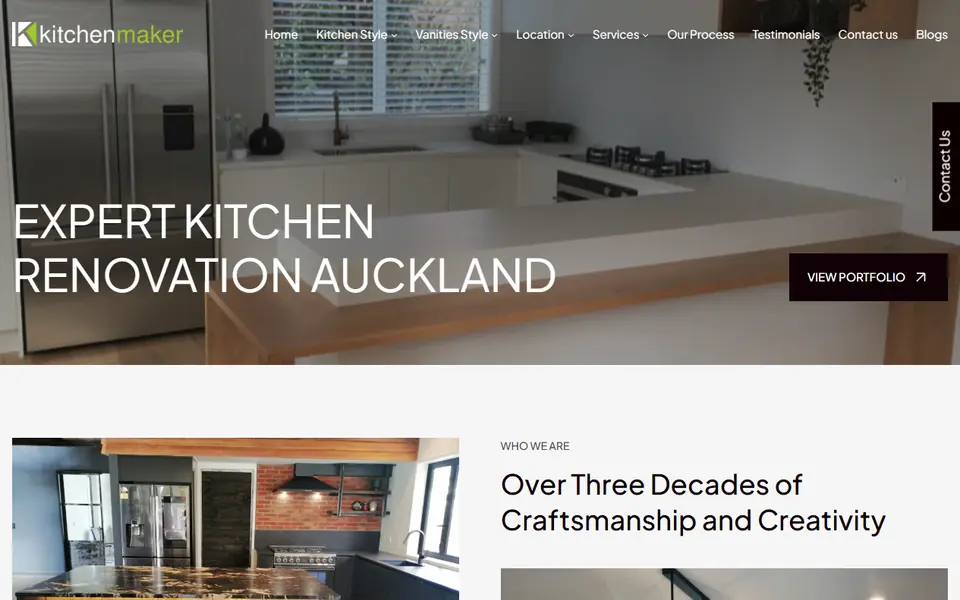
Kitchenmaker
Custom kitchens and cabinetry from an Auckland maker with over 30 years of craftsmanship.
Taking new work
I'm an Auckland-based infrastructure engineer. I build and host websites, fix the IT problems that stall your day, and automate the busywork between your systems. Harnessing the power of Opus with a little prompt engineering.
RoboCrax
Run by Pritam Bhuva, infrastructure engineer, Auckland
A selection of New Zealand and Australian businesses whose websites I've built, rebuilt or looked after, from adidas distributors to a mobile car detailer.

Custom kitchens and cabinetry from an Auckland maker with over 30 years of craftsmanship.
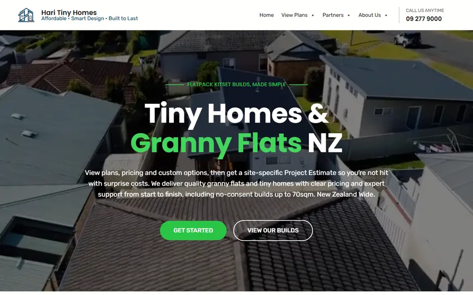
Affordable tiny homes and granny flats, with plans, pricing and custom-build estimates online.
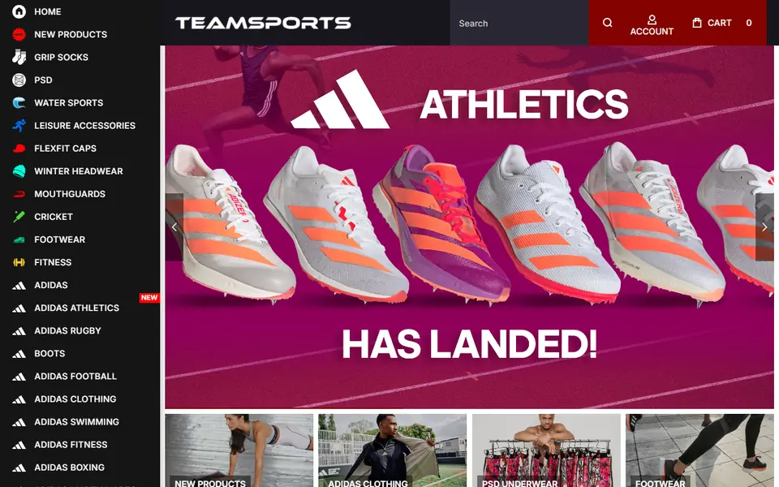
New Zealand distributor of adidas sportswear and team gear, with a full online store.
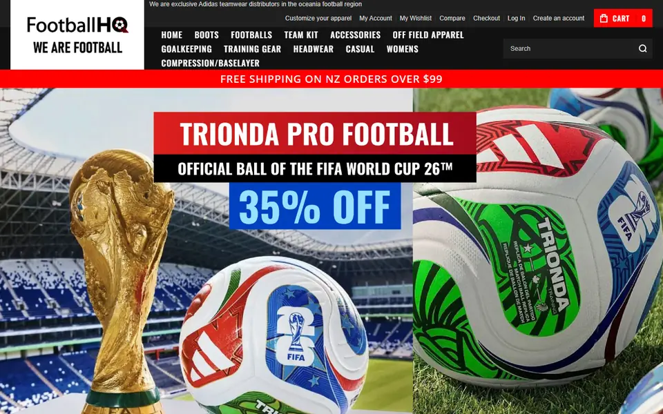
Exclusive adidas teamwear distributor for the Oceania football region, for clubs, trade and the public.
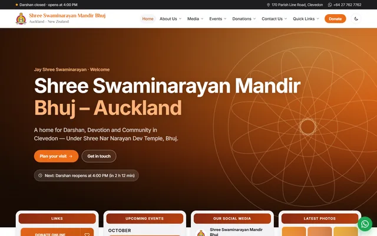
Shree Swaminarayan Mandir Bhuj, a Hindu temple and community in Clevedon, Auckland. A non-profit where I also do community service.
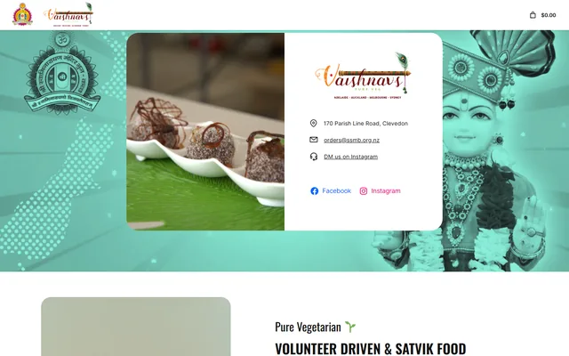
Pure vegetarian sweets, snacks and catering. An entity of SSMB Auckland.
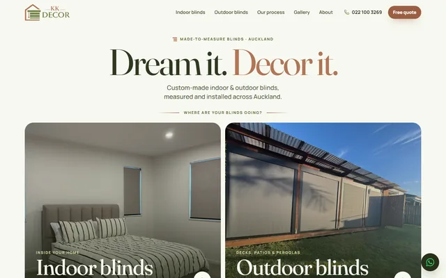
Stylish indoor and outdoor blinds.
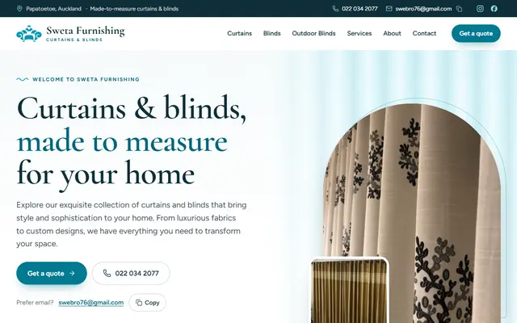
Made-to-measure curtains and blinds in Papatoetoe, Auckland.
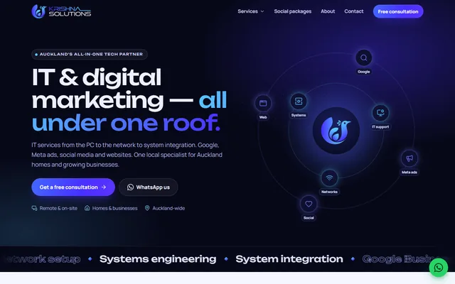
IT support, websites and digital marketing for Auckland homes and businesses.
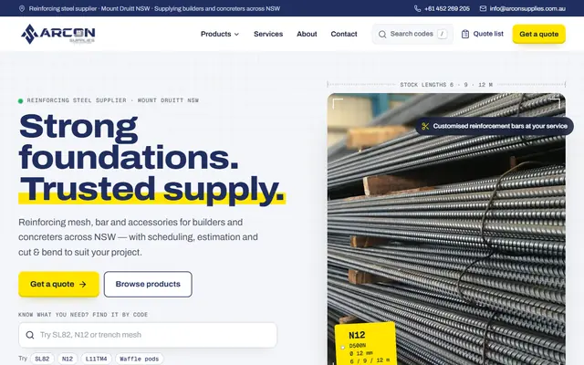
Reinforcing mesh, bar and accessories for builders in Mount Druitt, NSW.
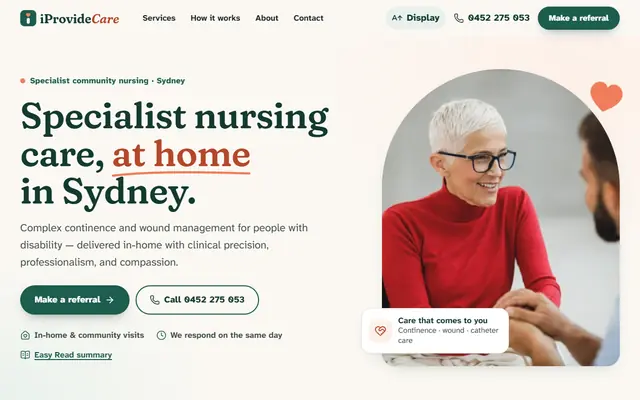
Specialist community nursing at home across Sydney.
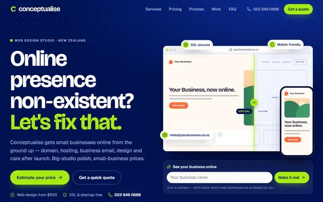
Affordable web design that gets NZ small businesses online.
Mobile car detailing across Auckland.
These are just some of the sites I've worked on. If you want yours built, rebuilt or simply looked after, let's talk.
Three services for small businesses, plus a streaming server for the community. Each one lives on its own shelf in the rack; scroll on to see them one at a time.
Fully managed hosting from Auckland. Setup, updates, security and backups are handled for you, and changes happen whenever you message.
Remote help for the problems a chatbot can't fix: dying laptops, full drives, stubborn printers and stuck email. You watch the whole session.
Small, dependable programs that move your data so you don't have to: scrapers, webhook relays and database syncs that run 24/7.
A private, ad-free streaming environment built on dedicated hardware. Native Full HD streaming directly tailored for your living room and personal devices.
WEB-01Website hosting
You run your business; I keep your website up, fast and secure. Hosting is based here in Auckland and managed end to end, with a direct line to me whenever something needs to change.
Auckland-based hosting with straightforward pricing and none of the big-provider markups or upsells.
Setup, upgrades, security, backups and custom tweaks are all on me. No control panels to learn.
Message or call me on WhatsApp whenever you need a change or have a question. No ticket queue, no bots.
Most standard sites come in around $200 a year. Larger or custom setups get a quote that fits what you actually need.
KVMIT support
AI is great for explaining things. It can't clear your drive, coax a printer back online or rescue a laptop that won't boot. I can, over a secure remote session that you watch from start to finish.
Sluggish machines, blue screens, startup freezes and malware clean-up.
Finding hidden bloat and old caches, and safely moving files to win back gigabytes.
Offline wireless printers, driver conflicts, scanners and external monitors.
Outlook and Gmail sync errors, broken email domains, password recovery and migrations.
Send a WhatsApp message describing the problem. A screenshot helps.
Use whatever you're comfortable with: AnyDesk, TeamViewer, RustDesk or Windows Quick Assist.
Everything happens on your screen in real time, and you can end the session whenever you like.
AUTO-01Data and automation
If someone on your team copies data between systems by hand, or a Zapier chain breaks every few weeks, that's a job for a small, purpose-built program. I write them in Go, Python and Node.js, and they run on a schedule or the moment something happens.
Headless-browser scrapers built with Playwright or Puppeteer that handle JavaScript-heavy pages, extract prices, stock levels or listings, and write clean JSON straight into your database.
Relays that receive events from Stripe, Shopify or your CRM, keep a raw log of every payload, and deliver them onward with automatic retries when the other end is down.
Each automation retries failed work with backoff, logs what it did, and tells you when something needs a human. Database syncs run on their own and pick up where they left off after an outage, so nothing gets lost or doubled up.
RoboCrax is just me, Pritam Bhuva. Every job is handled by me personally, from the first message to the ongoing support afterwards.
Based in Auckland, with straightforward pricing and none of the big-provider markups or upsells.
I build systems that retry, recover and report on their own, so fewer problems ever reach you.
Things I've built because they needed to exist: a live quiz app and a live stream controller for SSMB Auckland, the non-profit where I do community service, dashboards that pull a business's data into one place, a free practice test for learner drivers, a monitoring sidecar for the devices nobody can put an agent on, and many Magento 2 modules for my work. The list keeps growing.
A Kahoot-style quiz and polling app built from scratch. The audience joins on their phones, answers live questions and races up the leaderboard.
A free take on the NZTA learner theory test. No 10-question limit, no in-app purchases, full mock exams and endless practice in your browser.
Everything the AV desk does, on one page, on any phone, iPad or PC: tap a camera and it's live. Built for the volunteers who run SSMB Auckland's services.
Live dashboards that bring a business's data into one place, and a searchable directory of every site, store and tool a team runs.
A tiny Go sidecar that pings devices on your network and reports to Healthchecks.io only while they're healthy.
Many custom Magento 2 modules, each written from scratch for my work rather than bolted on from the marketplace.
If a tool doesn't exist yet, I'll make it. Message me with what you're trying to do.
TOOLS-01Custom build
A Kahoot-style quiz and polling app I built from scratch for SSMB Auckland's events. Everyone plays on their own phone while the host runs the session from a console.
respond.ssmb.org.nz
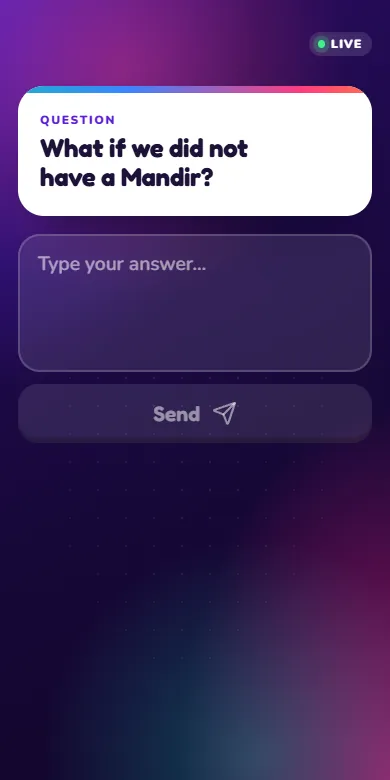
Open the link and pick a nickname. No app to install and no account to create.
Phones stay in sync with the host and reconnect by themselves if the signal drops.
Timed quiz rounds with one or more right answers, quick polls, and typed responses.
Correct answers score points, and the leaderboard keeps the room competitive between rounds.
I can build a quiz or polling app around your branding and the way your sessions run.
TOOLS-01Free to use
Free, unlimited practice for the NZTA learner theory test. The official app stops you at 10 questions and puts the rest behind a paywall; this one lets you keep going until every rule sticks.
No 10-question cap. Practise until you know every rule.
The real 35-question format with the same pass mark as the NZTA test.
Focus on intersections, signs, general road safety or parking.
Phone, tablet or computer, with nothing to install.
No subscriptions, no ads and no in-app purchases. Built to help Kiwis pass their learner licence on the first try.
ATEM-CTLCustom build, in service
As part of my community service at SSMB Auckland, a non-profit, I turned its video switcher into one simple page that runs on any phone, iPad or PC. Volunteers tap a camera and it's live, with no desk training needed.
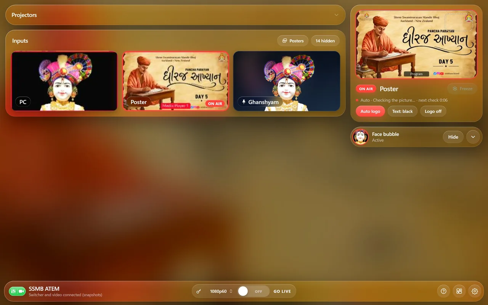
Tap a camera and it cuts straight to air.
Blank inputs hide themselves until they have a picture.
The logo finds a clear corner and steps aside when something moves in.
At the venue or away, from a phone, tablet or PC, behind a secure login.
If your hall, church, club or studio has a switcher and a rota of volunteers, I can build and improve your workflow and I can also run live streams for you.
DASH-01Custom build
I can build advanced dashboards according to your needs, linking data from literally any digital, internet-connected place: your online store, invoices, spreadsheets, booking system, CRM or the devices on your network.
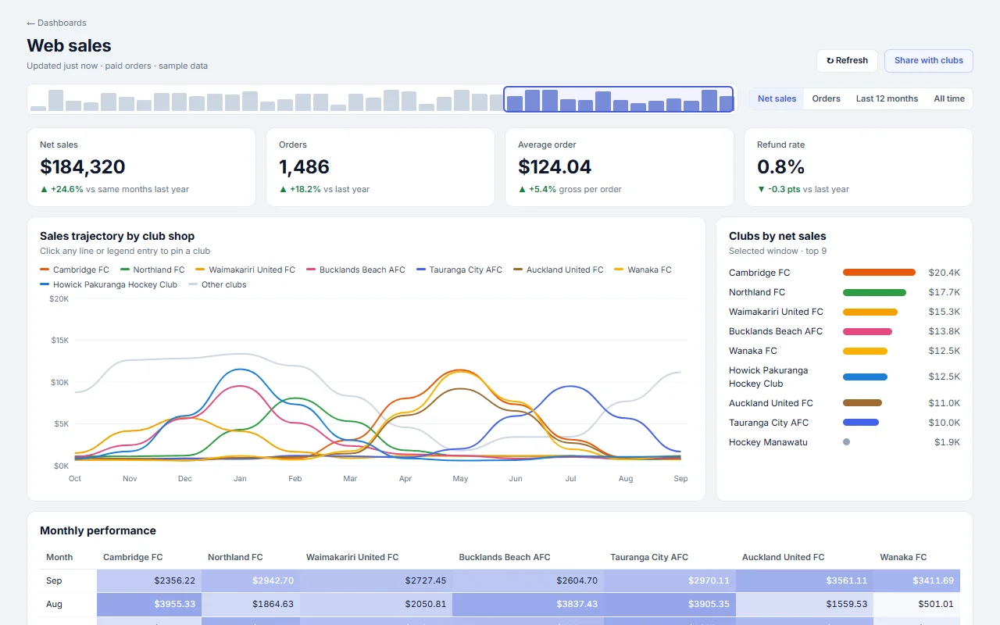
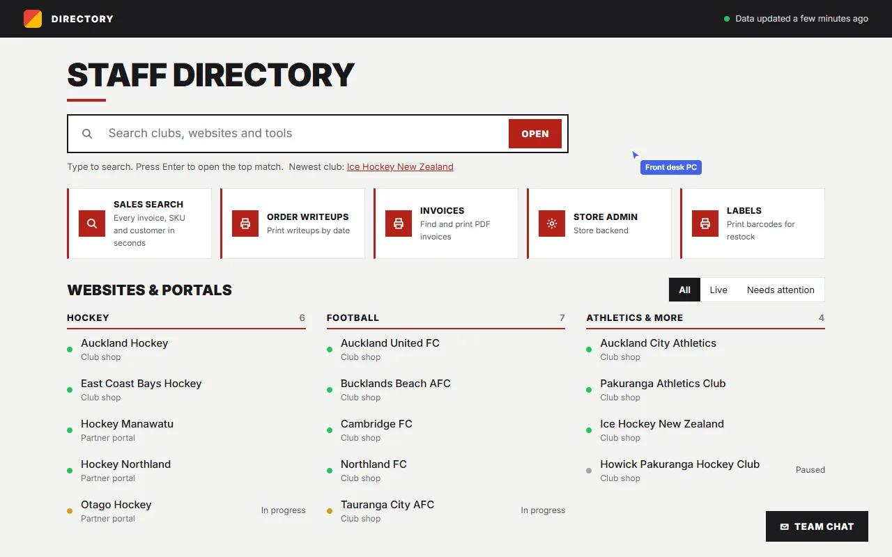
Stores, invoices, spreadsheets and other systems, joined up and kept in sync.
Data refreshes by itself, so nobody exports reports by hand.
Find any customer, order or website in seconds from one box.
Behind a secure sign-in, on any phone, tablet or PC.
Tell me where your data lives and what you need to see, and I'll build the dashboard around it.
PING-SIDECAROpen source
heartbeats-ping-sidecar is a tiny Go container for watching devices you can't install monitoring agents on: IoT gateways, home automation hubs, isolated database servers. It checks them with ICMP or TCP and sends a heartbeat to Healthchecks.io or BetterStack only when every check passes, so silence means something's wrong.
github.com/robocrax/heartbeats-ping-sidecar
version: '3.8'
services:
sidecar:
image: ghcr.io/robocrax/heartbeats-ping-sidecar:latest
restart: always
environment:
- TARGET_HOST=192.168.1.50
- HEARTBEAT_URL=https://hc-ping.com/your-uuid-token
- PING_INTERVAL_SEC=30TOOLS-01Commercial work
I've built many Magento 2 modules from scratch for my work. Each one is written from the ground up for a specific job a store needed done, rather than bolted on from the marketplace.
Tell me what the store has to do that it can't today, and I'll scope a module for it.
JELLYFINSmart TV
Authenticate your Smart TV, Android TV, Google TV, or Apple TV in seconds without typing passwords with your TV remote.
On Android TV, Google TV, or Fire TV, download Fladder or Findroid. On Apple TV, download the official Jellyfin app from the App Store.
Launch the app and set the host server URL to:
Click the Quick Connect button on your TV screen. The app will generate and display a temporary 6-digit code.
Log into your phone or browser, navigate to User Profile → Quick Connect, enter the 6-digit code, and click Authorize.
The rack on this page is a model of the kind of cabinet your site lives in: switch and firewall up top, web and automation servers in the middle, the Jellyfin media server and its drives below, all on a battery backup.